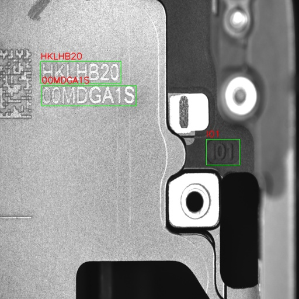
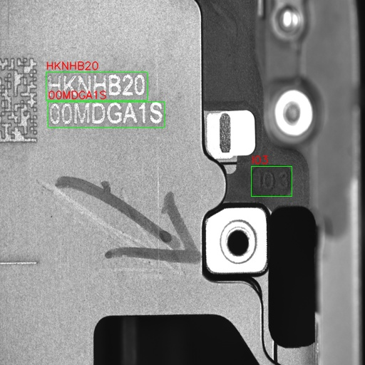
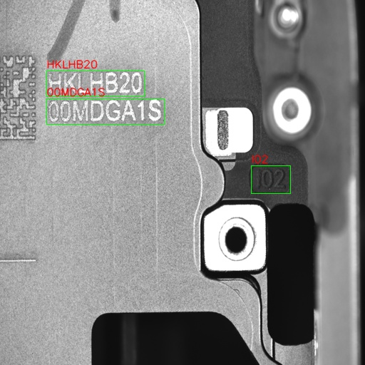
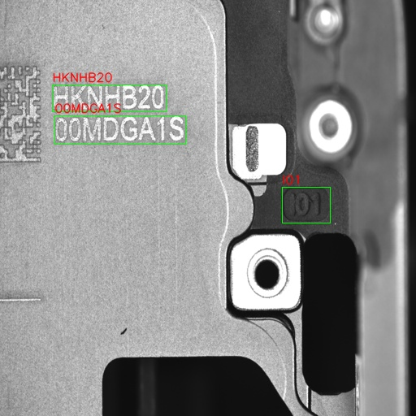
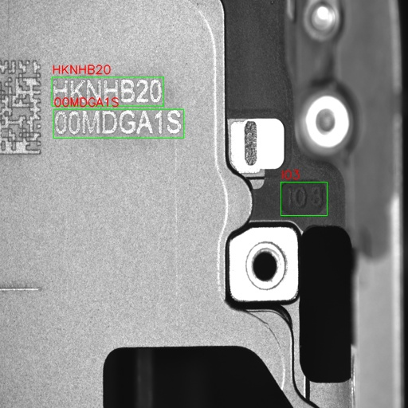

End-to-End Optical Recognition System for IC Chip Inspection
OCR · Character recognition · Text Box detection · Quality control · Production-ready
Overview
Comprehensive optical recognition system designed for automated IC chip inspection in production environments. The system combines optical character recognition (OCR) for chip marking verification with text box detection capabilities, ensuring both correct labeling and surface quality in high-speed manufacturing lines.
Problem
- Manual verification of IC chip markings time-consuming and error-prone.
- Varying lighting conditions and chip surface reflections challenge recognition accuracy.
- High-speed production lines require real-time processing.
- Need for simultaneous character verification and text box detection.
Solution
- End-to-end deep learning pipeline for OCR and text box detection.
- Hybrid approach: OCR for character recognition + ConvNextV2 backbone for text box detection.
- Robust preprocessing to handle lighting variations and reflections.
- Real-time inference optimized for production line speeds.
- Integrated quality control with automated pass/fail decisions.
My Role
- Designed complete end-to-end OCR pipeline from image acquisition to decision output.
- Developed character recognition models with high accuracy under variable conditions.
- Integrated text box detection module for comprehensive quality assessment.
- Implemented preprocessing techniques for robust performance under challenging lighting.
- Optimized inference speed for real-time production line deployment.
- Validated system performance across thousands of chip samples.
Implementation
Language: Python
Libraries:
PyTorch
OpenCV
TensorFlow
Tesseract OCR
Key Features: Character recognition, text box detection, quality grading, real-time processing
Technical Approach
OCR Pipeline
- Image preprocessing: contrast enhancement, noise reduction, alignment correction
- Text region localization using detection networks
- Character segmentation and recognition using deep learning models
- Post-processing with language models for error correction
- Confidence scoring for automated verification
Results Gallery
Real-time gesture recognition system demonstration.
Image Gallery





End Result
- High-accuracy character recognition system with >99% accuracy under production conditions.
- Reliable text box detection across multiple text categories.
- Real-time performance suitable for high-speed production lines.
- Automated quality verification reducing manual inspection requirements.
- Robust performance under varying lighting and chip surface conditions.
- Minimal false positives ensuring efficient production flow.